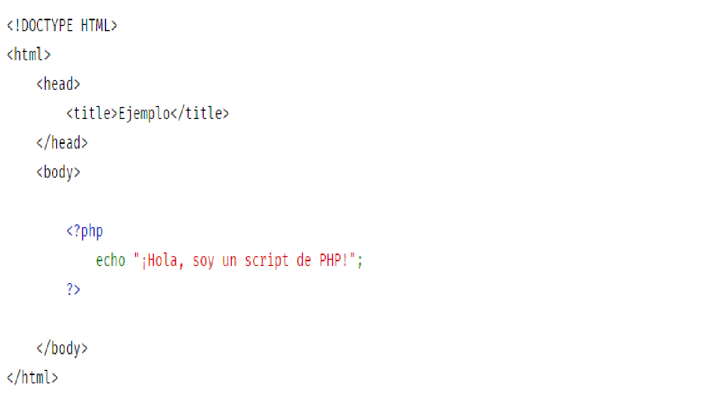

OVI Programación web 1 Vinculación de Base de Datos a una página web mediante PHP
Bienvenidos a este Ovi de programación web donde usted aprenderá a conectarse a una base de datos MySql desde PHP de manera sencilla. Aquí le enseñamos los pasos para la vinculación de una base de datos en una página web desde PHP con opciones de consulta, edición, modificación y eliminación de datos y/o registros. En un pequeño ejemplo vamos a ver cómo hacerlo.
Este material contiene información general sobre manejo de php para la vinculación de una base de datos en una página web. El objetivo de este OVI es mostrar mostrar la programación y los elementos necesarios para está vinculación Los Objetivos del curso están centrados en la realización de una página web que a su vez incluya herramientas que manejen una base de datos que sirva de alojamiento, administración, consulta de los diferentes datos y/o registros capturados de los diferentes usuarios que ingresan en la página web.
- Temáticas:
-
Introducción a PHP.
. Pasos vilculación base de datos
.Consultas en bases de datos
. Edición, modificación y eliminación de datos y registros